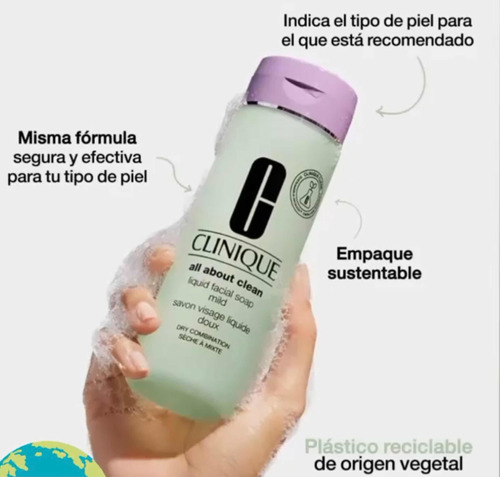
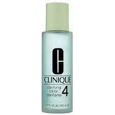
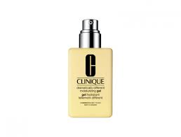

Piel grasa |
Novedades |
Hidratantes |
Necesitas ayuda para encontrar los productos ideales para ti |
 |
CLINIQUE: PIEL GRASA |
|||||
|---|---|---|---|---|---|
| Que es la pies grasa? | |||||
| Es una enfermedad cutánea común, que puede aparecer en la pubertad, junto con los cambios hormonales y que en ocasiones, persiste hasta la edad adulta de las personas. La piel produce grasa de forma natural para evitar la resequedad, pero cuando hay una producción excesiva, esta desencadena en un aspecto más húmedo y brillante, lo que se denomina piel grasa. | |||||
| El acne suele ser causado por la piel grasa? | |||||
| No directamente, pero es una de las consecuencias.Para que se diagnostique piel grasa deben existir otros factores, pero para su aparición la sobreproducción de sebo por la glándula sebácea puede ser uno de ellos. | |||||
Sistema de 3 pasos CLINIQUE |
|||||
|  |
Es el Paso 1 en nuestro Sistema de 3 Pasos personalizado. El jabón líquido desarrollado por dermatólogos limpia suavemente y a profundidad. Tipos de piel:piel muy seca, Tipo de piel seca, Tipo de piel mixta, Tipo de piel grasa |
|  |
Clarifying Lotion 4 Exfoliante suave que remueve el exceso de grasa. Controla la acumulación causante de brotes. Tipos de piel: piel grasa |
|  |
Dramatically Different™ Oil-Free Gel Humectante desarrolado por Dermatólogos de uso diario con ingredientes que fortalecen la piel. Suaviza, empareja, mejora. Tipos de piel: piel mixta, Tipo de piel grasa |
| Necesitas ayuda |
| Llamanos al 900 800 700 |
| Atencion al cliente |
| Terminos y condiciones |